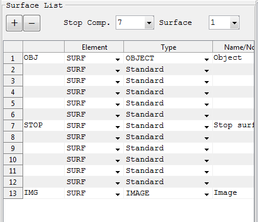

Optical Element List Panel

Column Header |
Description |
Remarks |
Element |
Used to indicate the optical element is a surface or a component |
SURF: For Surface COMP: For Component |
Type |
A pop up menu to choose the type of surface or component |
Currently supported Surfaces: Standard, Even Aspheres, Odd Aspheres, Ideal Lens, Torroidal, Dummy, Kostenbauder surfaces are functional. Components: Sequence_Of_Surfaces, Grating1D and Prism are included. |
Name/Comment |
To enter name and notes related to the surface. |
Any text inputs are accepted and it has no real functional significance. |
Note:
Created with the Personal Edition of HelpNDoc: Full-featured Kindle eBooks generator